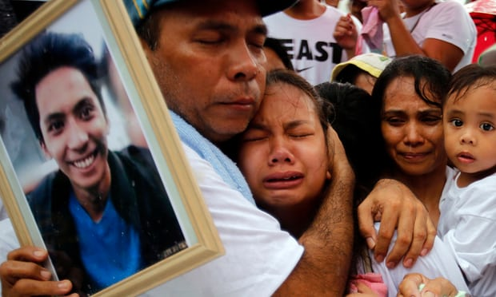

Relatives mourn Ephraim Escudero, the victim of an extrajudicial killing,
in San Pedro city, Philippines. Photograph: Francis R. Malasig/EPA
Sa aking pananaw ito ay ginawa niya para lang sa Public Appeal at sa totoo lang, behind the scenes ito ay kanya paring
sinusuporta at ginagawa.
Eto ang mga sample na mga article galing sa iba't ibang mapagkakatiwalaan na article sites.
from brookings.edu
from aljazeera.com
from hrw.org